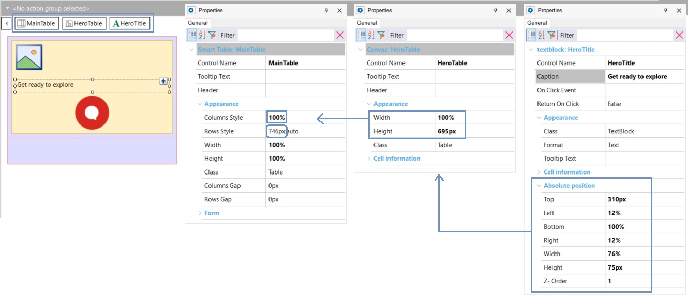

Design System Object - What controls do you need to implement the Header?
To simplify the header even more, forget about the menu and the Travel Agency icon for the moment and focus on the background image, the text and the chatbot image.

At least two layers can be identified: the one in the background, where the hero image will be located, and the one above it, which will contain the other two controls, in particular the main text.
To achieve these layers, a Canvas control is used in GeneXus, which is precisely what allows the controls it contains to be placed in layers, and their positioning to be absolute in relation to the Canvas (i.e., as if the edges of the canvas were the coordinate axes).
One option is to place the three elements inside a single Canvas control, where you will have:
● Bottom layer: an image (in an Image control, or in an Attribute/Variable control).
● Top layer: a text (in a Text Block control or in an Attribute/Variable control) and an image (in an Image control or in an Attribute/Variable control).
Thus, you will have four controls over the background table:
Given that:
● The background image will vary in the three screens (Home, Attractions and ViewAttraction), choose an Attribute/Variable control of Image type instead of an Image one.
● The chatbot image will not change, so choose an Image control.
Here you already have, then, the controls that will implement this simplified header. Now it is time to customize them so that they look as the designer has indicated. He or she probably gave you a file to examine, which contains all the design properties for these elements.
(Note: If the designer had created the design in Sketch, then you could import it directly into GeneXus and you wouldn't have much more to do other than adjust anything that doesn't look as expected, and move on to your more typical task: the functional implementation).
The file provided by the designer shows the height and width of the Hero container, the style of the main text, its distance from the edges, and so on:
The width and height of the canvas will have to match the width and height of the Hero group you examined. The chatbot's image will have to overflow its lower edge, which is not a problem because its position in relation to the upper edge of the canvas will be indicated. Also, the canvas will be placed in a table that gives more space for the row, so it can freely overflow the canvas and it will still be contained in the space of the table cell.
How do you bring those sizes and locations to your controls? Through properties:

What about the rest of the design information? For example, the Text Block font, color, or size...
Availability
Since GeneXus 17 upgrade 6.
| Backlinks |
| Toc:Getting started with Design System Objects |